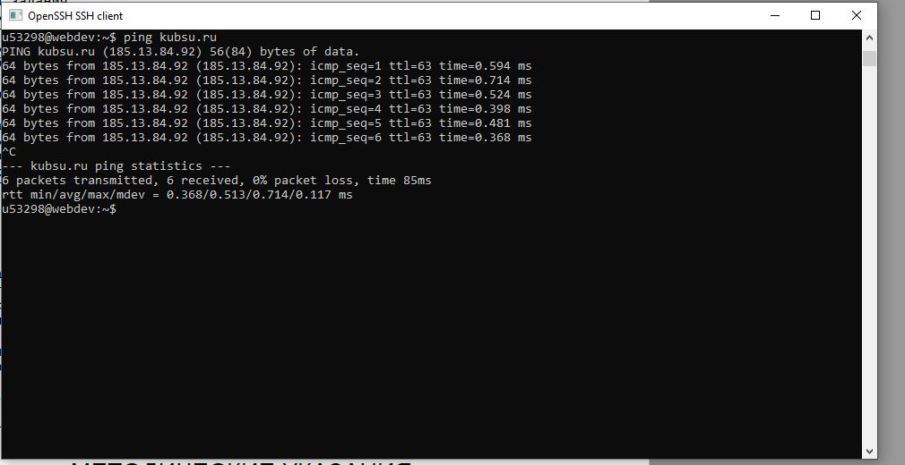
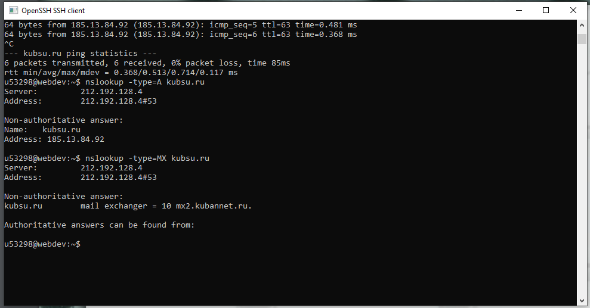
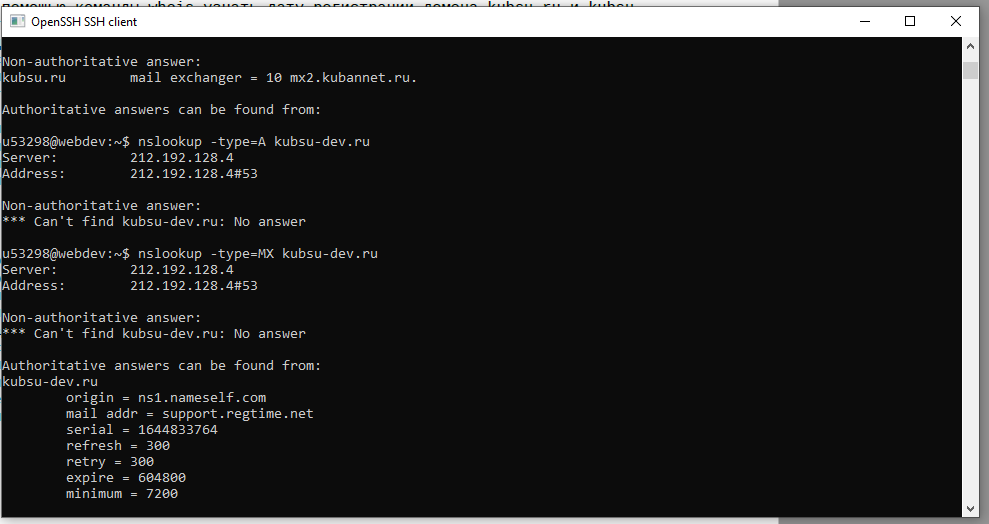
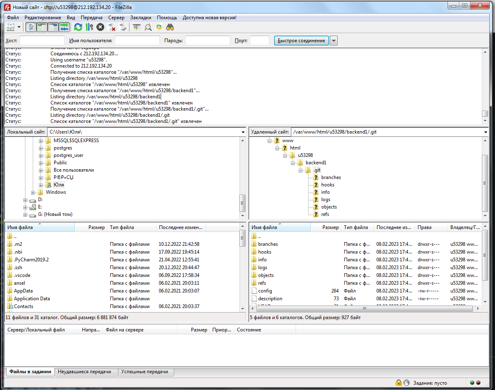
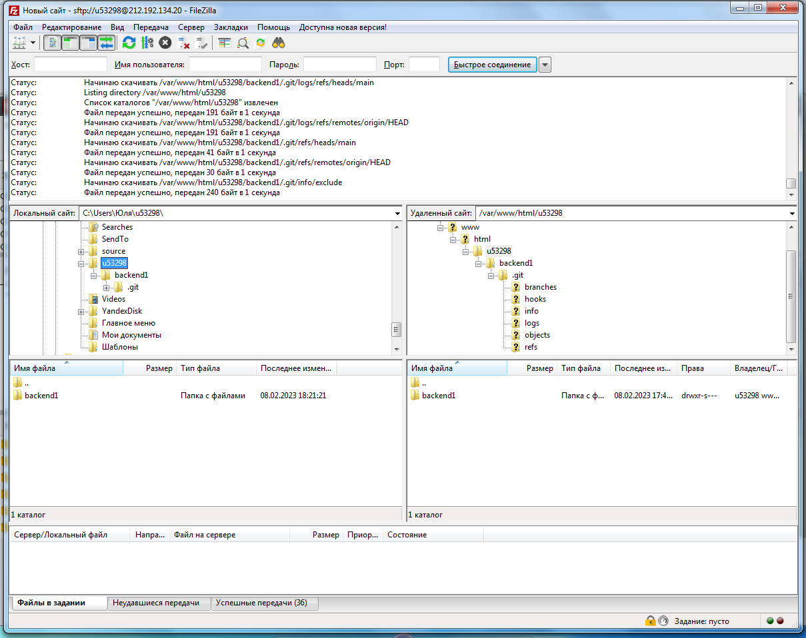
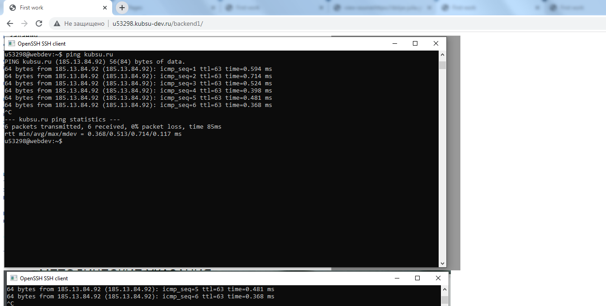

-
С помощью команды ping на учебном сервере узнать IP-адрес веб-сервера kubsu.ru

-
С помощью команды nslookup узнать A-записи и MX-записи домена kubsu.ru и kubsu-dev.ru


-
С помощью команды whois узнать дату регистрации домена kubsu.ru и kubsu-dev.ru

-
С помощью программы FileZilla соединиться с учебным сервером по протоколу FTP и скопировать на локальный компьютер файлы задания из каталога /var/www/html/u53298/


-
Веб-страница открывается по адресу http://u53298.kubsu-dev.ru/backend1/
